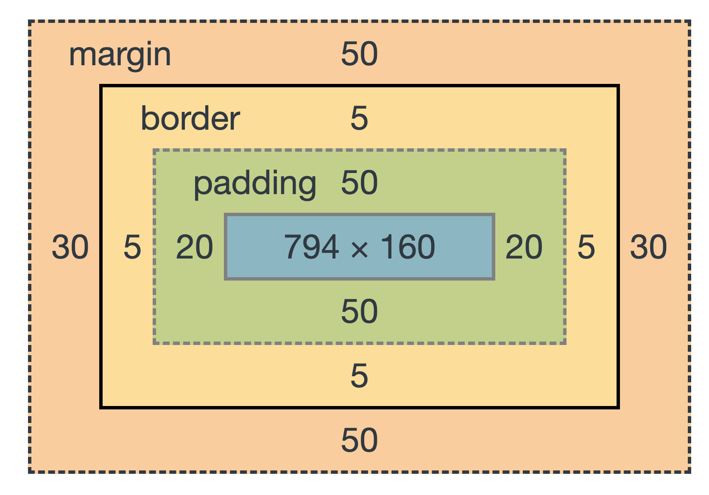

Welcome to my website
Hi, my name is Karolina. 28th of March 2022 I started Powercoders bootcamp. Powercoders is a work integration program for refugees & migrants. It consists of a coding bootcamp of 13 weeks and an internship that lasts 6 to 12 months. The ultimate goal of Powercoders is the permanent placement of trained refugees in IT-companies and IT-departments. Talented refugees & migrants, independent from their place of living, as long as they are allowed to travel can participate in this program. I am the one of the 26 lucky people. I'd like to show you what I've learned during this 13-weeks. Let's go!
CLI and Github
- What is version control?
- Common commands
- Basic of Git
- Git and Github diffrence
- How to configure local repo to sync
What is version control?
Version control is a tool that allow you to collaborate and track and revert changes. For example when we edit a file version control can help you determinate what exactly who changed it and why.
if something goes wrong you can revert your changes and go back to the last version.
List of common commands
On the command line, help is always at hand: you can either type: man command --help
If you plan to run a series of commands after another, it might be useful to combine them instead of waiting for each command to finish before typing the next one. To do so, simply separate the commands with a semicolon (;) on the same line
Whenever entering paths and file names, the TAB key comes in very handy. It autocompletes what you have written,reducing typos quite efficiently
The command line keeps a history of the most recent commands you executed. By pressing the ARROW UP key, you can step through the last called commands (starting with the most recent). ARROW DOWN will move forward in history towards the most recent call. You can also type 'history', that show you all your history.
cd change directory
cd ~ move to your root directory, no matter where you are
cd .. move up to parent directory
ls list all the files
ls -a list all files and hidden files
ls -d letter search by letter
findword: find by word
mkdir create new directory
rmdir remove/delete directory
rm remove a file
touch create a file
pwd find out the path of your current directory
cp origin destination copy file to another place
code name open in code editor
mv file_old file_new rename
mv file directory move to another directory
cat file output the contents
clear clear the command line
Basic of git
$ git config --global user.name "Your Name Here" sets the default name for Git to use when you commit
git config --global user.email "your_email@powercoders.org" sets the default email for Git to use when you commit
$ git config --global init.defaultbranch "main" sets the default branch to the name "main" instead of "master"
$ git config --global code.editor "code wait" sets the default editor to VSC
git init is a command used to transform repository
git status is used to display the state of the repository and staging area
git diff is used to show the diffrence between what's in the working directory and what's in the file
git add . is a command used to add a files that are in the working directory to the staging area
git commit -m "some message" is a command used to add all files that are staged to the local repository
git push is a command used to add all committed files in the local repository to the remote repository. So in the remote repository, all files and changes will be visible to anyone with access to the remote repository
git merge is a command used to get the files from the local repository into the working directory
git pull is command used to get files from the remote repository directly into the working directory
Git and Github diffrence
Git is a Version control system software that you can run on your own computer, or on a server and allows you to communicate with Github and push/pull your files
GitHub is a Cloud-based service for storing, sharing, and collaborating on projects managed with Git and is the server, where your team projects are hosted
How to configure local repo to sync
First of all, you have to create new repository on Github. After that, you can see link to your repository and you should copy this. Open terminal for example in Visual Studio Code and enter:
$ git remote add origin https://TOKENgithub.com/user/name-of-repository.git
and next:
$ git remote -v to view configured remotes
git push -u origin main you only have to do that the first time and then can use push and pull without argument
git push after that
HTML
What is HTML?
HTML is the standard markup language for creating Web pages.
Inline and block elements in HTML5
Inline elements just take up the space that is absolutely necessary for the content and does not start from a new line. Example:
<span>, <a>, <strong>, <img>, <button>, <em>, <select>, <abbr>, <label>, <sub>, <cite>, <abbr>, <script>, <label>, <i>, <input>, <output>, <q> ...
Block elements start on a new line and consume the full width of the page available. Example:
<div>, <p>, <header>, <footer>, <h1>...<h6>, <form>, <table>, <canvas>, <video>, <blockquote>, <pre>, <ul>, <ol>, <figcaption>, <figure>, <hr>, <article>, <section> ...
Semantic Block-Level Tags
<header> for introduction of the page, e.g. logo, page headline, content summary.
<nav> as container for navigational elements, links to access content within the website
<main> for the main and most important content of a page
<section> for thematic grouping of content, e.g. news, team
<article> is independent, self-contained content, e.g. news entry, blog entry
<aside> for less important content, e.g. in a sidebar or overlay
<footer> for information at the end of document, e.g. copyright, address, author, legal info
<h>-tags can be within different block-level elements, e.g. header, main, article, section, footer. Use hierarchical order of headlines, e.g.
<h1> in the <header>
<h2> in the <section>
<h3> in the <article>
Each article should contain at least 1 headline.
Each page should only have 1 <h1>-tag.
Don't leave a number out, e.g. first <h1>, then <h3>.
HTML Interview Questions
These are basic question on interview about HTML. If you want to see the answer, click the question.
HTML tags and elements are not the same thing. A HTML tag is like a container for either content or other HTML tags. A HTML element consists of the start tag + content tag + end tag. Some HTML tags do not have end tags like img hence in those cases HTML element will consist of start tag + content.
HTML elements which do not have closing tags or do not need to be closed are Void elements. For Example: br, img, hr, etc.
In HTML some characters are reserved like “<“, “>“, “&“, etc. To use these characters in our webpage we need to use the character entities called HTML Entities
The effect on a normal webpage is the same. <b> and <i> tags stands for bold and italic. These two tags only apply font styling. <strong> and <em> are semantic. Hence these are preferred in modern web pages.
When we use the attribute “visibility: hidden” for an HTML element then that element will be hidden from the webpage but still takes up space. Whereas, if we use the “display: none” attribute for an HTML element then the element will be hidden, and also it will not take up any space on the webpage
If the scripts contain some event-triggered functions or jquery library then we should use them in the head section. If the script writes the content on the page or is not inside a function then it should be placed inside the body section at the bottom
No, these tags are diffrent. In the case of <select> tag a user will have to choose from a list of options, whereas <datalist> when used along with the <input> tag provides a suggestion that the user selects one of the options given or can enter some entirely different value.
Yes, in HTML5 we can drag and drop an element. This can be achieved using the drag and drop-related events to be used with the element which we want to drag and drop.
HTML5 supports the following three types of audio file formats: Mp3, WAV, Ogg.
CSS
What is CSS?
CSS stands for Cascading Style Sheet. It is a style sheet language that determines how the elements/contents in the page are looked/shown. CSS is used to develop a consistent look and feel for all the pages.
Flexbox
Flexbox is an easy way to create responsive websites as scalability is built-in.
You can use display: flex to create a flex container
justify-content define the horizontal alignment of items
align-items define the vertical alignment of items
flex-direction if you need columns instead of rows
row-reverse / column-reverse you can use this to flip item order
order customize the order of individual elements
align-self vertically align individual items
Grid
It is the latest CSS layout technique.
You can use display: grid to create grid container
grid-template-row define the number and height of rows
grid-template-column define the number and width of columns
grid-gap / grid-row-gap / grid-column-gap define the gutter between grid items
fr create flexible grid tracks. It represents a fraction of the available space in the grid container. You can combine fr with others units like px or %
grid-template-areas define names for your grid, e.g. header, content, sidebar and footer
grid-column-start / grid-column-end place the items in the grid
grid-auto-rows / grid-auto-columns / grid-auto-flow auto place items
justify-items / align-items align the items inside your grid
CSS Interview Questions
These are basic question on interview about CSS. If you want to see the answer, click the question.
A rectangle box is wrapped around every HTML element. The box model is used to determine the height and width of the rectangular box. The CSS Box consists of Width and height (or in the absence of that, default values and the content inside), padding, borders, margin.
Content: Actual Content of the box where the text or image is placed.
Padding: Area surrounding the content (Space between the border and content).
Border: Area surrounding the padding.
Margin: Area surrounding the border.

Separation of content from presentation - CSS provides a way to present the same content in multiple presentation formats in mobile or desktop or laptop.
Easy to maintain - CSS, built effectively can be used to change the look and feel complete by making small changes. To make a global change, simply change the style, and all elements in all the web pages will be updated automatically.
Bandwidth - Used effectively, the style sheets will be stored in the browser cache and they can be used on multiple pages, without having to download again.
A CSS Preprocessor is a tool used to extend the basic functionality of default vanilla CSS through its own scripting language. It helps us to use complex logical syntax like - variables, functions, mixins, code nesting, and inheritance to name a few, supercharging your vanilla CSS.
Pseudo-elements allows us to create items that do not normally exist in the document tree. Examples:
::before
::after
::first-letter
::first-line
::selection
Pseudo-classes select regular elements but under certain conditions like when the user is hovering over the link. Examples:
:link
:visited
:hover
:active
:focus
No, it doesn’t affect the inline elements. Inline elements flow with the contents of the page.
“Cascading” refers to the process of going through the style declarations and defining weight or importance to the styling rules that help the browser to select what rules have to be applied in times of conflict. The conflict here refers to multiple rules that are applicable to a particular HTML element. In such cases, we need to let the browser know what style needs to be applied to the element. This is done by cascading down the list of style declarations elements.
Javascript
What is Javascript
JavaScript is a high-level programming language. Nowadays you can (nearly) do anything with JavaScript. With JS we make the web sites interactive. You can for example use Ajax to load content without refreshing the page, include external content, form validation and proccess data, overlay elements and lightboxes, sliders, tabs and accordions, website tracking, drawing and animation.
Data Types in JS
Number: 3.141502
String: "Hello World"
Boolean: true / false
Undefined
Null
Objects
let vs. var
var is function-scoped. Every variable declared inside the function is only accessible inside the function.
let is block-scooped. Block is verything between curly brackets. Every variable declared inside the curly brackets is only accessible inside that block. Const as well.
const value can not be reassigned.
Best practice: use let over var. Use const for variables which do not change.
JS Interview Questions
These are basic question on interview about Javascript. If you want to see the answer, click the question.
The == operator compares two values, without taking into account their types. === compares the values, but also makes their types into account. So 3==‘3‘ evaluates to True, but 3===‘3‘ evaluates to False.
textContent is a concatenation of the text content of a node and its descendant. It is the fastest of the two
innerHTML returns the HTML. It parses the text into HTML, which makes it slower.
DOM stands for the Documentation Object Models, and it is a World Wide Web Consortium standard.It defines a standard for accessing documents, and it can be used to access and change the content of the HTML.
There are 3 pop up boxes: Alert, Confirm and Prompt.
The break statement is used to exit a current loop. On the other hand, the continue statement continues with the next announcement in the loop.